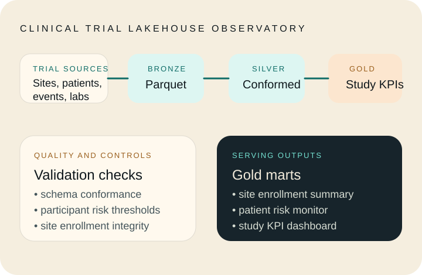

01 • Lakehouse platform
Clinical Trial Lakehouse Observatory
Local-first clinical analytics platform that lands trial data in bronze parquet, conforms research entities in silver, and publishes gold study KPI, enrollment, and patient-risk marts.
- Shows governed medallion thinking without hiding behind vendor-specific magic.
- Built around regulated clinical workflows rather than generic sample data.
- Includes runnable pipeline, synthetic source generation, quality checks, and tests.
